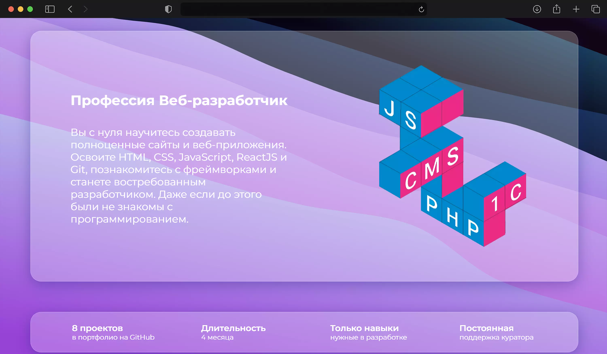
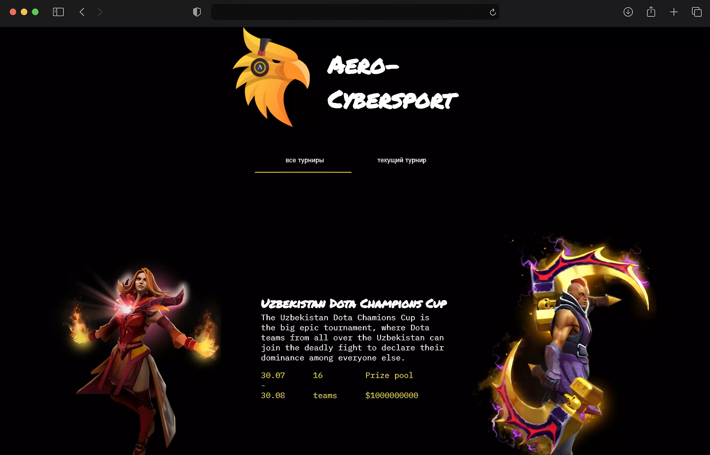
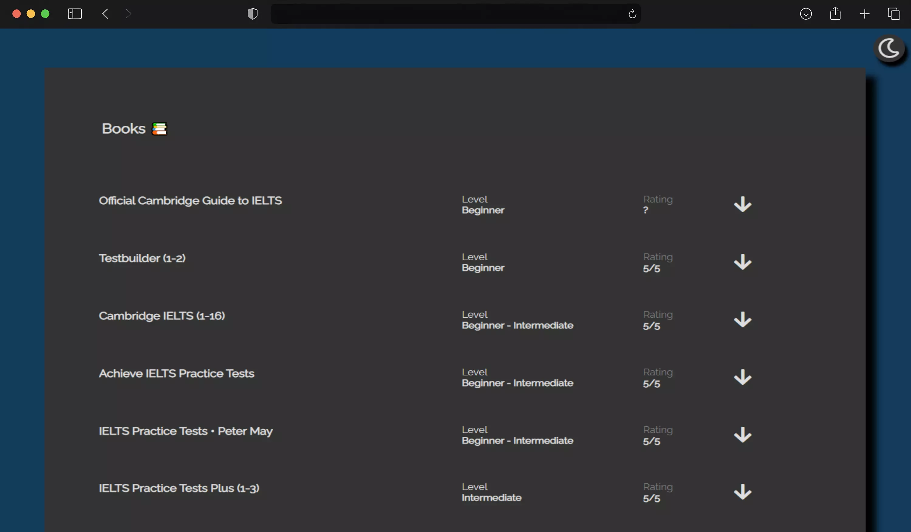
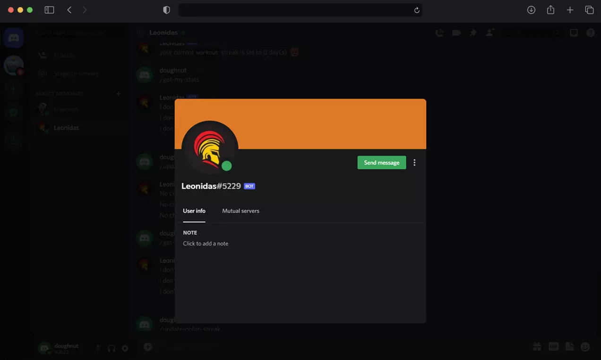
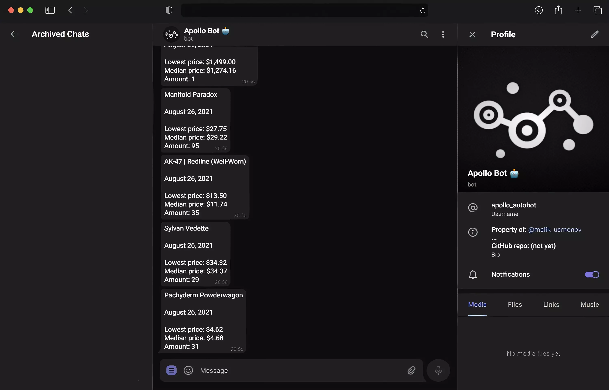
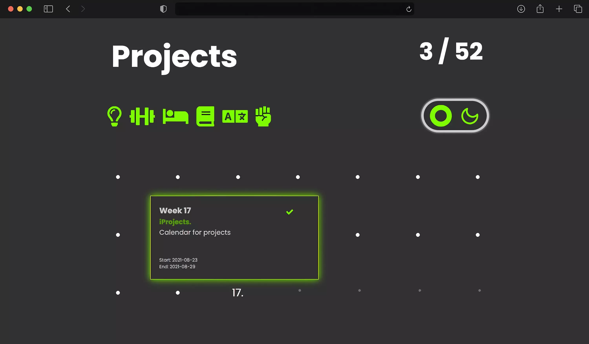

learn.
create.
explore.
Hi! I'm Malik
A junior full-stack enthusiast on a daily basis
projects

I have created this website for a Skillline school. Adaptive and responsive one-page website. Design and development were done fully by me.
Tech. stack
svg

This is the very first project of mine. The idea behind it was to provide gamers of Uzbekistan with the cybersports events, where they could face the strongest players from all over the country in the battle for fame, money, and championship.
This is the very first project of mine. The idea behind it was to provide gamers of Uzbekistan with the cybersports events, where they could face the strongest players from all over the country in the battle for fame, money, and championship.
• Grid, Adaptive & Responsive Layout;
• Animations in JS;
• Creating records of users, checking for existing users;
• Unique ID for each user;
• 404 page
Tech. stack
rest api
mongo db

This is the website for IELTS practicioners, where I have collected over 30 books and 11 web-platforms, which include more than 300+ IELTS Practice Tests of various difficulty, as well as countless lessons & tips for learners.
This is the website for IELTS practicioners, where I have collected over 30 books and 11 web-platforms, which include more than 300+ IELTS Practice Tests of various difficulty, as well as countless lessons & tips for learners.
• Grid, Adaptive & Responsive Layout;
• Simple and minimalistic, yet neat design
Tech. stack

This project was initially created in purposes of tracking different streaks of its users, either in DM and within the server. Leonidas can track anything & keep the records in its own database, retrieve records & update them.
Tech. stack
rest api
repl.it
replit db

I have created this bot to track the prices of Steam Community Market items, specifically CS:GO & DOTA 2 items.
I have created this bot to track the prices of Steam Community Market items, specifically CS:GO & DOTA 2 items.
Apollo bot can remember items, send prices of multiple items simultaneously, and get price histories of CS:GO items.
Tech. stack
telegraf.js
rest api
repl.it
replit db

This is my personal project - website, where I have collected all of my personal and professional projects. Hence, iProjects is basically the list of all of my projects.
This is my personal project - website, where I have collected all of my personal and professional projects. Hence, iProjects is basically the list of all of my projects.
P.s. This is not the ultimate look of my website, because it is under development yet.
P.p.s. It also does not have a responsive & adaptive layout
Tech. stack
airtable.js
airtable